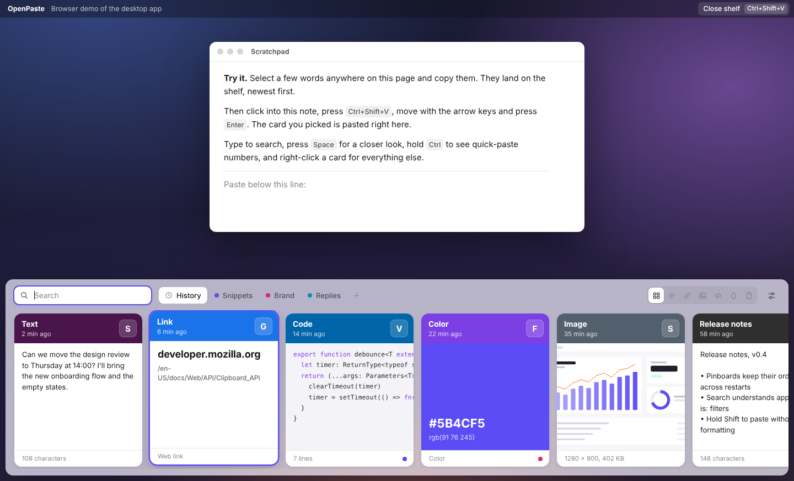

Your clipboard,
remembered
OpenPaste is a free, open-source clipboard manager. Everything you copy waits on a visual shelf, one shortcut away.
Try it here: copy any text on this page, then press

A home for everything
you copy
Text, links, code, colors, images and files, each shown the way it looks, with the app it came from. Narrow it down with is:image is:code or app:slack.
Remembers everything
Text, rich text, links, code, colors, images and files, with the app each came from and when. Copy it again and it moves to the front.
Shows it the way it looks
A copied color fills its card, images go edge to edge, links lead with the site name and code keeps its shape.
Finding made effortless
Start typing the moment the shelf opens. Search covers everything you've copied, and filters narrow it to one kind.
Filters
Mix a filter with words: is:link docs finds links that mention docs.
- Everything
- is:link
- is:image
- is:code
- is:color
- is:file
- app:slack
Pastes where you were
Pick a card and OpenPaste puts it straight back into the app you were using. Hold Shift to leave the formatting behind.
Simple for anyone. Fast for keyboards.
Click and drag if you like, or never touch the mouse: arrows to move, ⌘1–9 to paste one of the first nine, Tab to switch boards.
“The shelf floats over other apps, so it stays quiet: one accent for selection and focus, every other color comes from content.”
Private by default
Your history never leaves your computer. No account, no cloud, nothing to sign in to.
What it skips
Some things should never be in a clipboard history. OpenPaste leaves them out.
- Password manager copies
- Apps on your ignore list
- Anything while paused
- Old, unpinned items
Privacy
History is stored only on this computer, in a plain folder.
“No native modules. Pasting uses each system's own tools, so there is nothing to compile and the app builds on any machine.”
Everything you need
in one shortcut
Runs everywhere
macOS 13 and later, Windows 10 and later, and 64-bit Linux. The same shelf and the same shortcuts on each.
Pinboards
Named, colored boards for snippets, replies and brand colors. Never cleaned up.
Quick paste
⌘1 to ⌘9 pastes one of the first nine cards.
Preview
Space shows the whole card before you paste it.
Undo delete
Removed something by mistake? Bring it back.
Edit and rename
Fix the text before pasting, and name cards you'll want again.
Drag and drop
Drag a card onto a pinboard, or out into another app.
Light and dark
Follows your system, or pick one in Settings.
Opens at login
Ready before you copy your first thing of the day.
Search that understands kinds
Type words, or ask for a kind of thing from a particular app.
Your own shortcut
Keep ⇧⌘V or record any shortcut you like.
Images and files
Screenshots, photos and files, stored once even if copied twice.
Get started for free
Version 1.0.0 for macOS, Windows and Linux. No account needed.
The installers aren't signed with a paid certificate yet. On first launch, choose Open Anyway in Privacy & Security (macOS) or More info → Run anyway (Windows).